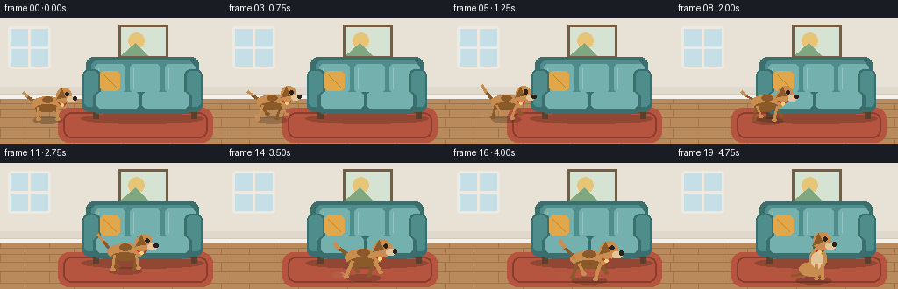
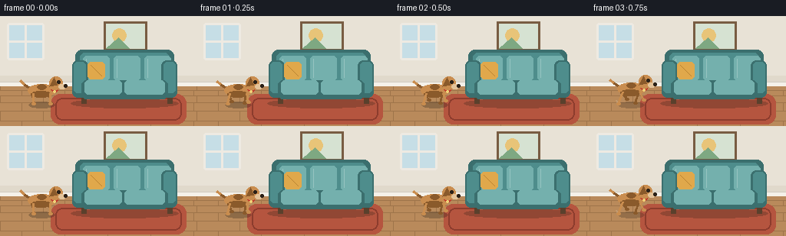

CODING AGENTS AS PIXEL WORLD MODELS
traex/Seed-2.1-Pro-0915 · dynamic_spatial_relationship_0001
点击播放 · 原生 RGB 像素
逐轮保存的候选
回放视频、检查图与代码变化。
每份候选均可单独播放。实际图片检查记录在下方工具轨迹中。
候选 01播放与检查图
点击播放 · 原生 RGB 像素


展开代码变化
--- 上一保存版本
+++ 本次保存版本
@@ -0,0 +1,313 @@
+"""Text-to-video: a dog runs from the left of a sofa to the front of it.
+
+Renders 20 RGB frames (256x144, 4 fps) with PIL/numpy only. The scene is a
+small living room drawn from primitives; the dog is a side-view cartoon with
+a quadruped leg-gait cycle, body bob, tail wag and a sitting arrival pose.
+"""
+import math
+from pathlib import Path
+
+import numpy as np
+from PIL import Image, ImageDraw
+
+import artifact_io
+
+W, H, N, FPS = 256, 144, 20, 4.0
+CASE_DIR = Path(__file__).parent
+
+# Palette
+WALL = (232, 226, 214)
+WALL_BAND = (224, 217, 203)
+BASEBOARD = (245, 241, 233)
+FLOOR = (185, 138, 91)
+FLOOR_LINE = (158, 116, 74)
+RUG = (181, 85, 63)
+RUG_BORDER = (140, 60, 45)
+SOFA = (78, 141, 140)
+SOFA_DARK = (59, 111, 110)
+SOFA_LIGHT = (116, 176, 173)
+PILLOW = (224, 168, 75)
+DOG = (201, 141, 79)
+DOG_DARK = (138, 90, 43)
+DOG_LIGHT = (227, 195, 154)
+BLACK = (43, 33, 24)
+COLLAR = (192, 57, 43)
+
+HORIZON = 92
+
+
+def smoothstep(u):
+ return u * u * (3 - 2 * u)
+
+
+def quad_bezier(p0, p1, p2, u):
+ a = (1 - u) ** 2
+ b = 2 * (1 - u) * u
+ c = u ** 2
+ return (a * p0[0] + b * p1[0] + c * p2[0],
+ a * p0[1] + b * p1[1] + c * p2[1])
+
+
+def draw_room(img, draw):
+ # Wall with a subtle lower band
+ draw.rectangle([0, 0, W, HORIZON], fill=WALL)
+ draw.rectangle([0, HORIZON - 14, W, HORIZON], fill=WALL_BAND)
+ # Baseboard
+ draw.rectangle([0, HORIZON - 6, W, HORIZON], fill=BASEBOARD)
+ draw.line([0, HORIZON - 6, W, HORIZON - 6], fill=(210, 204, 192))
+
+ # Window (upper left)
+ wx0, wy0, wx1, wy1 = 12, 12, 54, 54
+ draw.rounded_rectangle([wx0 - 3, wy0 - 3, wx1 + 3, wy1 + 3], 3,
+ fill=(238, 234, 226))
+ draw.rectangle([wx0, wy0, wx1, wy1], fill=(198, 222, 230))
+ draw.line([(wx0 + wx1) // 2, wy0, (wx0 + wx1) // 2, wy1],
+ fill=(238, 234, 226), width=3)
+ draw.line([wx0, (wy0 + wy1) // 2, wx1, (wy0 + wy1) // 2],
+ fill=(238, 234, 226), width=3)
+
+ # Framed picture above the sofa
+ px0, py0, px1, py1 = 138, 10, 188, 42
+ draw.rectangle([px0 - 3, py0 - 3, px1 + 3, py1 + 3], fill=(120, 92, 66))
+ draw.rectangle([px0, py0, px1, py1], fill=(214, 226, 210))
+ draw.ellipse([px0 + 8, py0 + 6, px0 + 26, py0 + 24], fill=(232, 196, 120))
+ draw.polygon([(px0, py1), (px0 + 16, py0 + 18), (px0 + 30, py1)],
+ fill=(126, 168, 130))
+
+ # Floor with perspective planks
+ draw.rectangle([0, HORIZON, W, H], fill=FLOOR)
+ plank_ys = [97, 104, 113, 124, 137]
+ for y in plank_ys:
+ draw.line([0, y, W, y], fill=FLOOR_LINE)
+ # Staggered vertical seams
+ rows = [HORIZON] + plank_ys
+ for row, (ya, yb) in enumerate(zip(rows, plank_ys + [H])):
+ offset = 0 if row % 2 == 0 else 28
+ for x in range(offset, W, 56):
+ draw.line([x, ya, x, yb], fill=FLOOR_LINE)
+
+ # Rug in front of the sofa
+ rug = Image.new("RGBA", (W, H), (0, 0, 0, 0))
+ rd = ImageDraw.Draw(rug)
+ rd.rounded_rectangle([66, 102, 242, 141], 12, fill=RUG + (255,))
+ rd.rounded_rectangle([72, 107, 236, 136], 9, outline=RUG_BORDER + (255,),
+ width=2)
+ img.alpha_composite(rug)
+
+
+def draw_shadow(img, cx, fy, width, alpha=70):
+ layer = Image.new("RGBA", (W, H), (0, 0, 0, 0))
+ d = ImageDraw.Draw(layer)
+ d.ellipse([cx - width / 2, fy - 4, cx + width / 2, fy + 4],
+ fill=(30, 24, 18, alpha))
+ img.alpha_composite(layer)
+
+
+def draw_sofa(img, draw):
+ x0, x1 = 98, 226
+ # Sofa ground shadow
+ shadow = Image.new("RGBA", (W, H), (0, 0, 0, 0))
+ sd = ImageDraw.Draw(shadow)
+ sd.ellipse([x0 - 6, 108, x1 + 6, 120], fill=(30, 24, 18, 60))
+ img.alpha_composite(shadow)
+
+ # Legs
+ for lx in (x0 + 8, x1 - 8):
+ draw.rectangle([lx, 106, lx + 6, 114], fill=(90, 64, 44))
+
+ # Backrest
+ draw.rounded_rectangle([x0, 44, x1, 92], 8, fill=SOFA_DARK)
+ draw.rounded_rectangle([x0 + 6, 48, x1 - 6, 86], 6, fill=SOFA)
+ # Back cushions
+ for i in range(3):
+ cx0 = x0 + 10 + i * 40
+ draw.rounded_rectangle([cx0, 52, cx0 + 34, 84], 5, fill=SOFA_LIGHT)
+ draw.line([cx0 + 4, 56, cx0 + 4, 80], fill=(150, 196, 193))
+
+ # Arms
+ draw.rounded_rectangle([x0 - 4, 58, x0 + 16, 106], 7, fill=SOFA_DARK)
+ draw.rounded_rectangle([x1 - 16, 58, x1 + 4, 106], 7, fill=SOFA_DARK)
+ draw.rounded_rectangle([x0 - 2, 60, x0 + 13, 100], 5, fill=SOFA)
+ draw.rounded_rectangle([x1 - 13, 60, x1 + 2, 100], 5, fill=SOFA)
+
+ # Seat base and cushions
+ draw.rounded_rectangle([x0 + 8, 84, x1 - 8, 108], 6, fill=SOFA_DARK)
+ draw.rounded_rectangle([x0 + 12, 84, 158, 102], 5, fill=SOFA_LIGHT)
+ draw.rounded_rectangle([162, 84, x1 - 12, 102], 5, fill=SOFA_LIGHT)
+ draw.line([160, 86, 160, 100], fill=SOFA_DARK)
+
+ # Accent pillow on the left cushion
+ draw.rounded_rectangle([x0 + 16, 60, x0 + 38, 82], 5, fill=PILLOW)
+ draw.line([x0 + 20, 64, x0 + 34, 78], fill=(186, 132, 50))
+
+
+def leg(draw, attach, foot, color, width):
+ draw.line([attach, foot], fill=color, width=width)
+ draw.ellipse([foot[0] - 2, foot[1] - 1, foot[0] + 3, foot[1] + 2],
+ fill=color)
+
+
+def draw_dog_running(draw, cx, fy, s, phase, bob):
+ """Side-view dog facing right."""
+ sy = fy - 17 * s + bob # body center y
+ shoulder = (cx + 11 * s, sy + 4 * s)
+ hip = (cx - 11 * s, sy + 4 * s)
+ w_leg = max(2, int(round(3 * s)))
+ amp = 5.5 * s
+
+ def foot(attach, offset, far=False):
+ swing = math.sin(phase + offset)
+ lift = max(0.0, math.sin(phase + offset)) * 4.5 * s
+ return (attach[0] + swing * amp, fy - lift - (1 * s if far else 0))
+
+ # Far legs first (diagonal gait pairs)
+ leg(draw, (hip[0] - 1 * s, hip[1]), foot(hip, 0.0, True),
+ DOG_DARK, w_leg)
+ leg(draw, (shoulder[0] - 1 * s, shoulder[1]),
+ foot(shoulder, math.pi, True), DOG_DARK, w_leg)
+
+ # Tail (wagging), drawn behind body
+ wag = 3.5 * s * math.sin(phase * 0.7 + 1.0)
+ tail_base = (cx - 16 * s, sy - 3 * s)
+ tail_mid = (cx - 23 * s, sy - 9 * s + wag * 0.5)
+ tail_tip = (cx - 28 * s, sy - 15 * s + wag)
+ draw.line([tail_base, tail_mid], fill=DOG_DARK, width=w_leg)
+ draw.line([tail_mid, tail_tip], fill=DOG, width=w_leg)
+
+ # Body
+ draw.ellipse([cx - 18 * s, sy - 8 * s, cx + 18 * s, sy + 8 * s], fill=DOG)
+ # Belly shading
+ draw.ellipse([cx - 14 * s, sy + 1 * s, cx + 12 * s, sy + 9 * s],
+ fill=DOG_DARK)
+ # Back spot
+ draw.ellipse([cx - 6 * s, sy - 8 * s, cx + 6 * s, sy - 1 * s],
+ fill=DOG_DARK)
+
+ # Near legs
+ leg(draw, shoulder, foot(shoulder, 0.0), DOG, w_leg)
+ leg(draw, hip, foot(hip, math.pi), DOG, w_leg)
+
+ # Head
+ hx, hy = cx + 19 * s, sy - 9 * s
+ hr = 8.5 * s
+ # Neck
+ draw.polygon([(cx + 10 * s, sy - 4 * s), (hx - 4 * s, hy + 2 * s),
+ (hx - 2 * s, hy + 7 * s), (cx + 12 * s, sy + 5 * s)],
+ fill=DOG)
+ draw.ellipse([hx - hr, hy - hr, hx + hr, hy + hr], fill=DOG)
+ # Snout
+ draw.rounded_rectangle([hx + 3 * s, hy + 1 * s, hx + 12 * s,
+ hy + 7 * s], 3 * s, fill=DOG_LIGHT)
+ draw.ellipse([hx + 10 * s, hy + 1 * s, hx + 14 * s, hy + 5 * s],
+ fill=BLACK)
+ # Floppy ear
+ draw.polygon([(hx - 3 * s, hy - hr + 1),
+ (hx - 9 * s, hy + 4 * s),
+ (hx + 1 * s, hy + 2 * s)], fill=DOG_DARK)
+ # Eye
+ draw.ellipse([hx + 1 * s, hy - 4 * s, hx + 5 * s, hy], fill=BLACK)
+ # Collar with tag
+ draw.arc([hx - 7 * s, hy + 2 * s, hx + 3 * s, hy + 11 * s],
+ 20, 160, fill=COLLAR, width=max(2, int(2 * s)))
+ draw.ellipse([hx - 4 * s, hy + 9 * s, hx - 1 * s, hy + 12 * s],
+ fill=(240, 210, 120))
+
+
+def draw_dog_sitting(draw, cx, fy, s, phase):
+ """Facing-right sitting pose for the arrival at the sofa front."""
+ w_leg = max(2, int(round(3 * s)))
+ # Tail flat on the ground, gentle wag
+ wag = 2 * s * math.sin(phase * 0.5)
+ draw.line([(cx - 10 * s, fy - 4 * s),
+ (cx - 22 * s, fy - 3 * s + wag)],
+ fill=DOG_DARK, width=w_leg)
+ # Haunches
+ draw.ellipse([cx - 14 * s, fy - 16 * s, cx + 10 * s, fy - 2 * s],
+ fill=DOG)
+ # Upright chest
+ draw.ellipse([cx - 4 * s, fy - 30 * s, cx + 12 * s, fy - 8 * s],
+ fill=DOG)
+ draw.ellipse([cx - 2 * s, fy - 26 * s, cx + 9 * s, fy - 10 * s],
+ fill=DOG_LIGHT)
+ # Front legs straight down
+ for lx in (cx + 2 * s, cx + 8 * s):
+ draw.line([(lx, fy - 14 * s), (lx, fy - 1 * s)],
+ fill=DOG, width=w_leg)
+ draw.ellipse([lx - 2, fy - 2, lx + 3, fy + 1], fill=DOG)
+ # Head
+ hx, hy, hr = cx + 8 * s, fy - 36 * s, 8.5 * s
+ draw.ellipse([hx - hr, hy - hr, hx + hr, hy + hr], fill=DOG)
+ draw.rounded_rectangle([hx + 3 * s, hy + 1 * s, hx + 12 * s,
+ hy + 7 * s], 3 * s, fill=DOG_LIGHT)
+ draw.ellipse([hx + 10 * s, hy + 1 * s, hx + 14 * s, hy + 5 * s],
+ fill=BLACK)
+ draw.polygon([(hx - 3 * s, hy - hr + 1),
+ (hx - 9 * s, hy + 4 * s),
+ (hx + 1 * s, hy + 2 * s)], fill=DOG_DARK)
+ draw.ellipse([hx + 1 * s, hy - 4 * s, hx + 5 * s, hy], fill=BLACK)
+ draw.arc([hx - 7 * s, hy + 2 * s, hx + 3 * s, hy + 11 * s],
+ 20, 160, fill=COLLAR, width=max(2, int(2 * s)))
+ draw.ellipse([hx - 4 * s, hy + 9 * s, hx - 1 * s, hy + 12 * s],
+ fill=(240, 210, 120))
+
+
+def draw_dust(img, cx, fy, s, phase):
+ layer = Image.new("RGBA", (W, H), (0, 0, 0, 0))
+ d = ImageDraw.Draw(layer)
+ for k, off in enumerate((0.3, 1.4)):
+ strength = max(0.0, math.sin(phase + off))
+ if strength <= 0:
+ continue
+ r = (2.5 + 2.5 * k) * s
+ x = cx - 20 * s - k * 5 * s
+ y = fy - 2
+ alpha = int(90 * strength)
+ d.ellipse([x - r, y - r * 0.6, x + r, y + r * 0.6],
+ fill=(214, 196, 168, alpha))
+ img.alpha_composite(layer)
+
+
+def render_frame(i):
+ img = Image.new("RGBA", (W, H))
+ draw = ImageDraw.Draw(img)
+ draw_room(img, draw)
+ draw_sofa(img, draw)
+
+ # Path: left of sofa -> curving around to the front (L-shaped arc)
+ p0 = (54.0, 114.0)
+ ctrl = (148.0, 112.0)
+ p1 = (160.0, 132.0)
+
+ if i <= 2: # idle at the left side
+ cx, fy = p0
+ s = 1.0
+ phase = i * 0.4
+ bob = 0
+ draw_shadow(img, cx, fy + 2, 34 * s)
+ draw_dog_running(draw, cx, fy, s, phase, bob)
+ elif i >= 17: # arrived, sitting in front
+ cx, fy = p1
+ s = 1.18
+ draw_shadow(img, cx, fy + 2, 34 * s)
+ draw_dog_sitting(draw, cx, fy, s, (i - 17) * 0.6)
+ else: # running segment
+ u = smoothstep((i - 3) / 13.0)
+ cx, fy = quad_bezier(p0, ctrl, p1, u)
+ s = 1.0 + 0.18 * u
+ phase = (i - 2) * 1.7
+ bob = -1.6 * s * abs(math.sin(phase))
+ draw_shadow(img, cx, fy + 2, 34 * s, alpha=60)
+ draw_dust(img, cx, fy, s, phase)
+ draw_dog_running(draw, cx, fy, s, phase, bob)
+
+ return np.asarray(img.convert("RGB"), dtype=np.uint8)
+
+
+def main():
+ frames = np.stack([render_frame(i) for i in range(N)])
+ artifact_io.save(frames, CASE_DIR)
+ print(f"saved {N} frames {W}x{H} at {FPS} fps -> {CASE_DIR}")
+
+
+if __name__ == "__main__":
+ main()
可观测工具轨迹
实际执行的命令与返回图片。
命令 1exit 0
/bin/bash -lc 'cat prompt.txt; echo "---"; cat GENERATION_RULES.md; echo "---"; cat task_spec.json'
命令 2exit 0
/bin/bash -lc 'ls -la; find . -maxdepth 2 -type f | head -50; python3 -c "import numpy, PIL; print(numpy.__version__, PIL.__version__)"'
命令 3exit 0
/bin/bash -lc 'cat artifact_io.py'
命令 4exit 0
/bin/bash -lc 'cd "$(pwd)" && python3 generate.py && ls -la frames | head -8 && ls -la pixels.npz inspection.png index.html'
保存候选 1 份；完成命令 4 次；可验证图片返回 0 张。原始 API 响应与完整日志保留在本地。